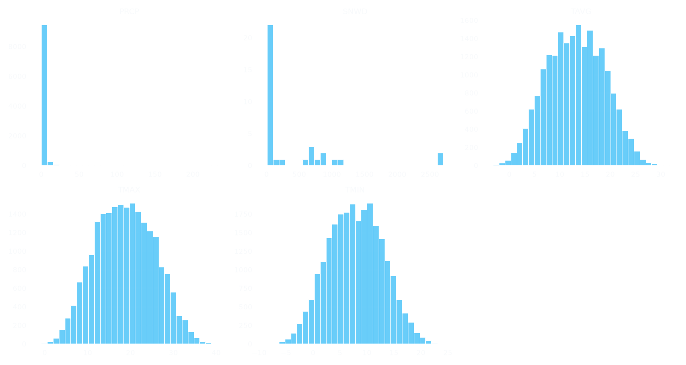
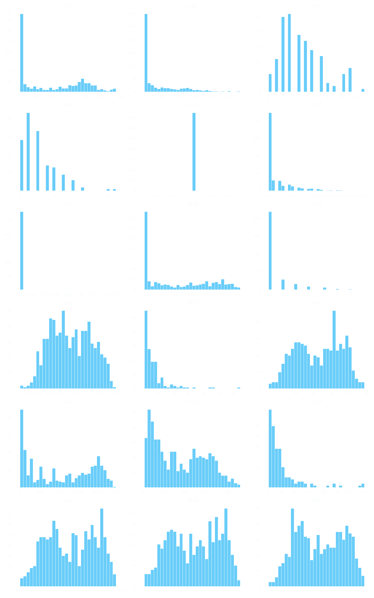
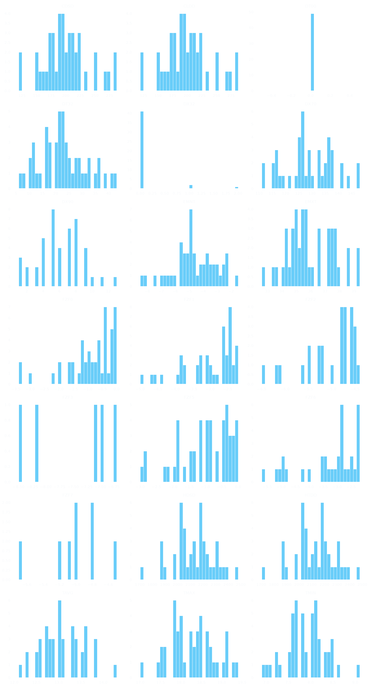
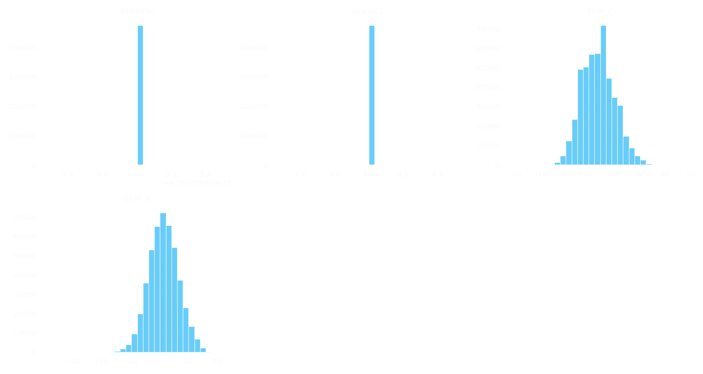
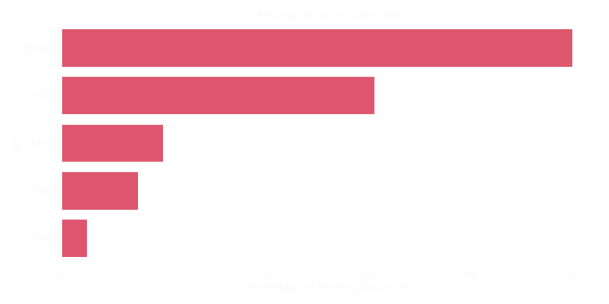
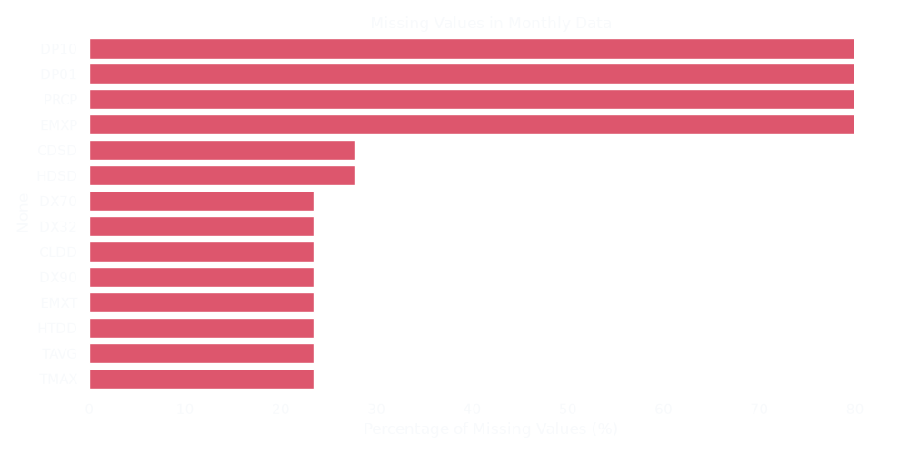
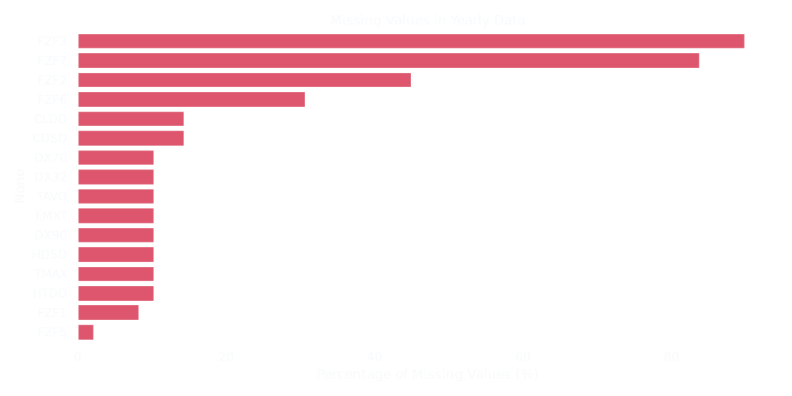
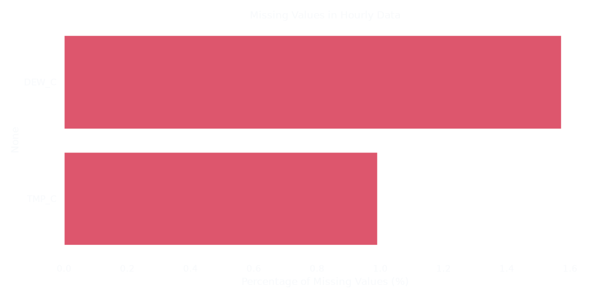
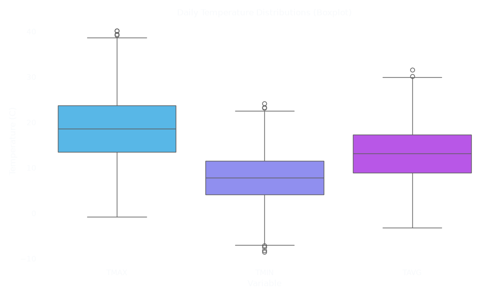
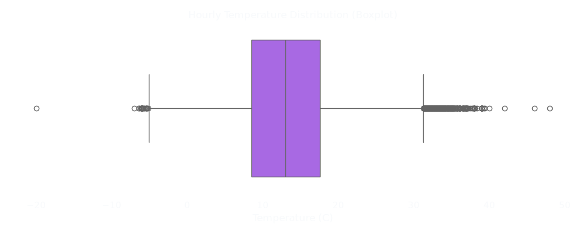

1. Data Documentation
Overview of columns, extreme values for numeric variables, and unique values for categorical variables.
Daily Data
| Column | Type | Details |
|---|---|---|
| STATION | str | Values: AR000087860 |
| NAME | str | Values: COMODORO RIVADAVIA, AR |
| DATE | datetime64[us] | Min: 1956-02-01, Max: 2025-08-24 |
| PRCP | float64 | Min: 0.0, Max: 231.9 |
| SNWD | float64 | Min: 10.0, Max: 2700.0 |
| TAVG | float64 | Min: -3.2, Max: 31.6 |
| TMAX | float64 | Min: -0.8, Max: 40.2 |
| TMIN | float64 | Min: -8.5, Max: 24.1 |
Monthly Data
| Column | Type | Details |
|---|---|---|
| STATION | str | Values: AR000087860 |
| NAME | str | Values: COMODORO RIVADAVIA, AR |
| DATE | datetime64[us] | Min: 1956-02-01, Max: 2024-09-01 |
| CDSD | float64 | Min: 0.0, Max: 287.0 |
| CLDD | float64 | Min: 0.0, Max: 111.2 |
| DP01 | float64 | Min: 0.0, Max: 13.0 |
| DP10 | float64 | Min: 0.0, Max: 11.0 |
| DT00 | int64 | Min: 0, Max: 0 |
| DT32 | int64 | Min: 0, Max: 20 |
| DX32 | float64 | Min: 0.0, Max: 2.0 |
| DX70 | float64 | Min: 0.0, Max: 31.0 |
| DX90 | float64 | Min: 0.0, Max: 7.0 |
| EMNT | float64 | Min: -8.5, Max: 10.6 |
| EMXP | float64 | Min: 0.0, Max: 130.0 |
| EMXT | float64 | Min: 12.1, Max: 39.4 |
| HDSD | float64 | Min: 5.6, Max: 2478.1 |
| HTDD | float64 | Min: 5.6, Max: 467.6 |
| PRCP | float64 | Min: 0.0, Max: 178.1 |
| TAVG | float64 | Min: 3.3, Max: 21.6 |
| TMAX | float64 | Min: 7.0, Max: 28.4 |
| TMIN | float64 | Min: -0.6, Max: 15.2 |
Yearly Data
| Column | Type | Details |
|---|---|---|
| STATION | str | Values: AR000087860 |
| NAME | str | Values: COMODORO RIVADAVIA, AR |
| DATE | datetime64[us] | Min: 1957-01-01, Max: 2019-01-01 |
| CDSD | float64 | Min: 119.4, Max: 287.0 |
| CLDD | float64 | Min: 119.4, Max: 287.0 |
| DT00 | int64 | Min: 0, Max: 0 |
| DT32 | int64 | Min: 6, Max: 43 |
| DX32 | float64 | Min: 0.0, Max: 2.0 |
| DX70 | float64 | Min: 111.0, Max: 148.0 |
| DX90 | float64 | Min: 1.0, Max: 13.0 |
| EMNT | float64 | Min: -8.5, Max: -1.5 |
| EMXT | float64 | Min: 32.6, Max: 39.4 |
| FZF0 | float64 | Min: -3.4, Max: 0.0 |
| FZF1 | float64 | Min: -5.0, Max: -2.2 |
| FZF2 | float64 | Min: -6.5, Max: -4.4 |
| FZF3 | float64 | Min: -8.5, Max: -6.7 |
| FZF5 | float64 | Min: -3.0, Max: 0.0 |
| FZF6 | float64 | Min: -5.7, Max: -2.2 |
| FZF7 | float64 | Min: -5.7, Max: -4.5 |
| HDSD | float64 | Min: 1703.8, Max: 2478.1 |
| HTDD | float64 | Min: 1703.8, Max: 2478.1 |
| TAVG | float64 | Min: 12.1, Max: 14.3 |
| TMAX | float64 | Min: 17.0, Max: 19.4 |
| TMIN | float64 | Min: 6.9, Max: 9.1 |
Hourly Data
| Column | Type | Details |
|---|---|---|
| STATION | int64 | Min: 87860099999, Max: 87860099999 |
| DATE | datetime64[us] | Min: 1957-06-30, Max: 2025-08-24 |
| SOURCE | int64 | Min: 4, Max: 4 |
| REPORT_TYPE | str | Values: FM-12, SY-MT, FM-15, FM-16, 99999 |
| CALL_SIGN | str | Values: 99999, SACR , SAVC |
| QUALITY_CONTROL | str | Values: V020 |
| DEW | str | 745 unique categorical values |
| TMP | str | 597 unique categorical values |
| TMP_C | float64 | Min: -20.0, Max: 48.0 |
| DEW_C | float64 | Min: -37.0, Max: 22.0 |
2. Numeric Distributions
Histograms showing the distribution of numeric columns across the datasets.
Daily Data Numeric Distributions

Histograms of numeric columns in the Daily Data dataset.
Monthly Data Numeric Distributions

Histograms of numeric columns in the Monthly Data dataset.
Yearly Data Numeric Distributions

Histograms of numeric columns in the Yearly Data dataset.
Hourly Data Numeric Distributions

Histograms of numeric columns in the Hourly Data dataset.
3. Missing Data
Analyzing the proportion of missing (NaN) values across datasets.
Missing Values: Daily Data

Columns in Daily Data with missing percentages.
Missing Values: Monthly Data

Columns in Monthly Data with missing percentages.
Missing Values: Yearly Data

Columns in Yearly Data with missing percentages.
Missing Values: Hourly Data

Columns in Hourly Data with missing percentages.
4. Outlier Detection
Visualizing temperature distributions to identify extreme outliers.
Daily Temperatures Outliers

Boxplots for TMAX, TMIN, and TAVG. Points beyond the whiskers are statistical outliers.
Hourly Temperature Outliers

Boxplot showing the distribution of hourly temperatures.
5. Suspicious Patterns
Verifying the physical logic of the temperature readings.
TMAX < TMIN check: Found 3 days where the maximum temperature is lower than the minimum. Examples of TMAX < TMIN anomalies:| DATE | TMAX | TMIN |
|---|---|---|
| 1957-06-25 | 0.5 | 1.0 |
| 1959-09-10 | 0.8 | 1.5 |
| 1963-05-05 | 2.4 | 6.5 |
Interactive Time Series (TMP_C & DEW_C)
This interactive plot shows the long-term trends of Temperature and Dew Point. The hourly data was aggregated into daily averages to ensure smooth interactive performance in the browser. You can zoom in and pan across the timeline.